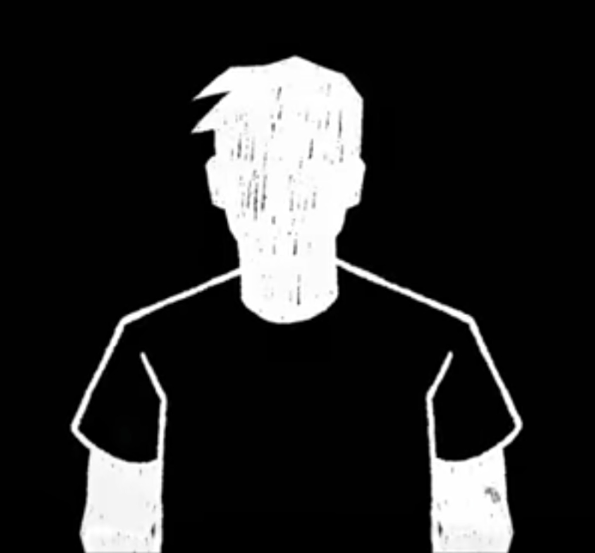

БЕЛАЯ ГОЛОВА Мистический психологический детектив с элементами фэнтези и романтики
Глава 1
Человек, которого называли Марком
Эйр просыпался медленно. Сначала в домах зажигался свет, потом по улицам проходили первые трамваи, а уже после открывались магазины. Альфред любил это время за его спокойствие. Пока город ещё не успел заговорить, можно было услышать собственные мысли.
Утром он остановился перед зеркалом в своей маленькой квартире.
Он привык к своему отражению. И всё же иногда задерживался перед ним дольше обычного.
Совершенно чёрное тело. Чёрная одежда, настолько сливающаяся с силуэтом, что невозможно было понять, где заканчивается ткань и начинается он сам. Белые руки. И белая, гладкая голова без лица — без глаз, носа и рта. Только светлая поверхность и неровный край волос.

Он поднял руку и коснулся зеркала белыми пальцами.
Отражение повторило движение.
Имя прозвучало привычно. Настолько привычно, что он не представлял, как может быть иначе.
Он не знал, почему выглядит именно так. Не помнил момента, когда впервые увидел себя в зеркале. Но это никогда не казалось ему важным. Он просто был Альфредом.
В мастерской возле Старого моста он работал переплётчиком. Люди приносили ему книги, письма и дневники, а он возвращал им вещи, которые казались почти потерянными.
В тот день пожилой мужчина принёс старый альбом. Альфред открыл его, чтобы проверить переплёт, и увидел на первой странице подпись: «Марк Вейл».
Мужчина заметил его взгляд.
Мужчина посмотрел на него чуть дольше обычного.
Альфред улыбнулся. Такое случалось. Люди иногда пытались сравнивать его с кем-нибудь из прошлого.
После обеда в мастерскую вошла девушка. Она держала под мышкой несколько архивных папок.
Она поставила папки на стол, посмотрела на него и совершенно спокойно сказала:
Альфред нахмурился.
Девушка замолчала.
Она посмотрела на него ещё раз, словно пыталась сопоставить лицо, которого у него не было, с каким-то давно забытым образом.
Она сказала это без уверенности.
Её звали Мира. Она работала в городском архиве и пришла за одной из книг, которую Альфред должен был восстановить.
Перед уходом она снова посмотрела на него.
Мира кивнула, но выглядела озадаченной.
На следующий день Альфред снова увидел её. Потом ещё раз через два дня. Каждый раз Мира пыталась убедить себя, что просто ошиблась.
Но однажды она сказала:
Альфред усмехнулся.
Мира отвела взгляд.
Именно тогда Альфред впервые почувствовал не любопытство, а странную пустоту внутри. Будто вопрос о Марке задел место, где у него самого должен был находиться ответ.
После работы он снова остановился перед зеркалом. На этот раз отражение показалось ему чужим. Не внешне — внешность оставалась прежней, — а каким-то внутренним ощущением. Он долго смотрел на белую голову и пытался представить лицо. Любое лицо. Но воображение каждый раз оставляло пустоту.
Вечером Мира прислала ему короткое сообщение: «Я нашла ещё одну запись о Марке. Завтра покажу». Альфред перечитал его несколько раз. Он не боялся узнать правду. Его больше тревожило другое: почему имя незнакомого человека постепенно начинало звучать так, будто оно имеет отношение к нему.
Он лёг спать поздно. Перед тем как закрыть глаза, снова произнёс своё имя. Альфред. Один раз. Потом второй. Словно проверял, не исчезло ли оно.
В ту ночь он записал в рабочей тетради: «Сегодня меня впервые назвали чужим именем, и это почему-то было неприятнее, чем если бы меня просто не узнали». Он перечитал запись утром и не стал её вычёркивать. Это была первая вещь, которую он сохранил не для работы, а для себя.
Утро после первой встречи ничего не изменило внешне. Эйр был тем же городом, трамваи шли по расписанию, а в мастерской пахло бумагой. Только Альфред теперь знал: иногда одного чужого имени достаточно, чтобы привычный мир начал казаться ненадёжным.
После разговора с Мирой Альфред не смог вернуться к работе. Он несколько раз пытался прошить корешок старого романа, но игла каждый раз уходила чуть в сторону. В конце концов он отложил книгу.
Он снова подошёл к зеркалу.
Белая голова отражала свет лампы. Чёрное тело почти исчезало на фоне тёмной комнаты. Альфред поднял обе руки и долго смотрел на них.
Ему хотелось услышать собственный голос ещё раз.
На этот раз внутри ничего не дрогнуло. Имя осталось на месте.
Но мысль о Марке не уходила.
Он открыл окно. С улицы донёсся шум трамвая. Где-то смеялись люди. Кто-то спорил. Кто-то звал кого-то по имени.
Альфред подумал, насколько страшной была бы жизнь, если однажды никто не сможет назвать его.
Он ещё не знал, что именно это и начинает происходить.
В мастерской Альфред обнаружил, что одна из книг, которую он ремонтировал, уже была закончена до того, как он к ней прикоснулся. Он открыл обложку и увидел свою подпись на внутренней стороне. Дата была сегодняшняя.
Мира посмотрела на подпись.
Альфред осторожно вырвал страницу.
Глава 2
Архив
Мира привела его в старый архив, где хранились документы об Образах. Образом называли совокупность памяти, привычек и следов человека в мире. Если Образ разрушался, человек не умирал сразу. Сначала исчезали детали, затем лицо, имя, фотографии, записи. В конце исчезал сам факт существования.
В папке Марка фотографии были пустыми. На каждой вместо лица оставалось белое пятно. Мира утверждала, что помнит его, хотя остальные сотрудники архива уже не могли вспомнить даже его голос.
Альфред показал на дату в папке. Рядом с ней стояла фотография его собственной белой головы. Он почувствовал холод, хотя в помещении было тепло.
Вечером Альфред долго не мог сосредоточиться на работе. Он снова открыл тот старый альбом, хотя не имел никакого отношения к его владельцу. Имя Марк не вызывало воспоминаний. Только неприятное ощущение, будто где-то рядом находится закрытая дверь.
На следующий день Мира пришла с другой папкой. Она призналась, что специально проверила архивные каталоги.
Альфред посмотрел на неё.
Мира впервые произнесла это не как уверенное утверждение, а как признание собственной ошибки. Альфреду стало легче.
Они договорились посмотреть архив вместе. Не чтобы доказать, что Альфред — Марк, а чтобы понять, почему два совершенно разных человека так часто оказываются связанными в чужих воспоминаниях.
На следующий день Мира показала ему старую регистрационную карточку. В ней было несколько строк, зачёркнутых настолько тщательно, что бумага порвалась.
Альфред провёл пальцем по рваной бумаге. Перед глазами на секунду возникло помещение архива, которого он никогда не видел. Несколько человек стояли вокруг стола. Один из них держал белый лист и говорил: «Не записывайте второе имя». Видение исчезло.
Они договорились больше не доверять одному источнику. Каждую найденную деталь нужно было подтверждать документами, чужими воспоминаниями или следами предметов. Так их расследование впервые стало настоящим расследованием.
Мира показала ему старый каталог. В нём были десятки похожих случаев, но ни один не совпадал полностью. Альфред понял, что его случай уникален. Это пугало, однако одновременно означало, что у них есть шанс найти ответ, которого ещё никто не находил.
Они провели в архиве несколько часов. Чем больше документов они просматривали, тем яснее становилось: проблема не в одной пропавшей записи. Кто-то много лет назад уже пытался стереть следы сразу нескольких людей.
Архив оказался больше, чем Альфред представлял. За обычными залами находились закрытые коридоры, а за ними — комнаты с документами, которые нельзя было выдавать посетителям.
Мира провела его туда после окончания рабочего дня.
Она открыла очередную папку.
В ней были записи о Марке. Даты, адреса, подписи. Всё выглядело убедительно.
Но рядом с одной записью стояла пометка: «Свидетель утверждает, что человек выглядел иначе».
Альфред провёл рукой над страницей и почувствовал знакомое покалывание.
Он увидел коридор. Увидел Марка. Увидел женщину, которая сказала: «Он не похож на себя».
Затем видение исчезло.
В архиве они нашли карту города, на которой некоторые улицы были отмечены серым. Люди продолжали ходить по ним, но документы утверждали, что этих улиц не существует.
Альфред провёл пальцами по карте.
В голове возникло ощущение пустого пространства.
Мира кивнула.
Глава 3
Следы
Они начали искать места, связанные с Марком. Альфред умел видеть следы памяти, если касался старых предметов и стен. Под Старым мостом он увидел Марка и услышал его голос: «Если я забуду себя, не пытайся вернуть меня». Мира призналась, что раньше не помнила этих слов.
Их расследование постепенно стало общим делом. Они нашли несколько людей, чьи Образы разрушались. Музыкант забыл собственные песни. Старик перестал узнавать голос дочери. Девочка не могла вспомнить имя матери. Кто-то делал это намеренно.
Архив встретил их запахом бумаги и пылью. Мира показала Альфреду старые карточки. На некоторых имя Марк читалось отчётливо, а фотография рядом была словно выжжена белым пятном.
Она объяснила ему правило, о котором Альфред раньше почти не задумывался: человек существовал в городе не только физически. Его удерживали воспоминания других, документы, привычные маршруты, фотографии, вещи. Чем больше связей исчезало, тем слабее становился Образ.
Альфред посмотрел на белые фотографии.
Мира пожала плечами.
И впервые они оба поняли: это расследование касается не только прошлого Марка. Оно каким-то образом касается Альфреда.
Они нашли музыканта, который забыл собственное имя. Он сидел в пустом зале и перебирал струны, но не мог объяснить, почему знает эту мелодию.
Альфред коснулся инструмента и увидел десятки вечеров: маленькие концерты, друзей, смех, девушку у сцены. Потом всё начало исчезать, словно кто-то стирал рисунок ластиком.
Альфред не знал, что ответить.
По дороге обратно он признался Мире:
Мира остановилась посреди улицы.
Они договорились не делать выводов до тех пор, пока не найдут хотя бы три независимых подтверждения. Это правило помогало не потерять голову. В мире, где память могла менять факты, осторожность была почти единственной формой защиты.
Альфред начал замечать, что некоторые предметы словно сопротивляются забвению. Старая кружка, письмо, сломанные часы — вещи продолжали хранить следы своих владельцев, даже когда люди уже не могли их вспомнить.
Первым человеком, которого они решили расспросить, была бывшая архивистка Лина. Она жила одна и почти не выходила из дома.
Когда Мира произнесла имя Марка, женщина долго молчала.
Лина посмотрела на него.
Альфред почувствовал неприятный холод.
После разговора Мира спросила, как он себя чувствует.
Альфред попытался подобрать слова.
Мира записала это.
Она закрыла блокнот.
И Альфред впервые улыбнулся ей по-настоящему.
Следы памяти стали вести их не только по улицам, но и в прошлое. Альфред видел события, которых не мог помнить лично. Иногда среди них появлялся Марк.
Самое странное было то, что Марк никогда не смотрел прямо на него.
Будто заранее знал: однажды кто-то увидит эти воспоминания.
Альфред посмотрел на неё.
Глава 4
Доктор Вельд
Доктор Вельд встретил их спокойно. Он руководил отделом восстановления Образов в Бюро памяти. Вельд считал, что память причиняет людям страдания, и утверждал, что многие сами просили избавить их от болезненных воспоминаний.
Вельд знал Альфреда. Он сказал, что тот связан с экспериментом девятилетней давности, и дал им ключ от центрального хранилища.
Они начали ходить по местам, связанным с Марком. Альфред обнаружил, что способен видеть следы памяти намного ярче, чем раньше. Стоило прикоснуться к старой стене — и на мгновение перед ним возникали чужие движения.
Под Старым мостом он увидел мужчину с обычным человеческим лицом. Мужчина стоял один и говорил кому-то за кадром:
Видение оборвалось.
Постепенно они заметили ещё одну закономерность. В городе действительно начали исчезать люди. Не массово и не одновременно. Просто становилось всё меньше упоминаний о тех, кто ещё вчера был частью чьей-то жизни.
Музыкант забыл собственные песни. Старик перестал узнавать голос дочери. Девочка однажды посмотрела на фотографию женщины и не смогла вспомнить, что это её мать.
Мира начала записывать каждую историю.
Альфред всё чаще чувствовал внутри ту самую пустоту. Она появлялась после каждого случая исчезновения, словно чужое забвение отнимало что-то и у него.
Вельд позволил им осмотреть старую лабораторию. На стенах остались схемы Образов, соединённых линиями. Некоторые линии обрывались, другие сходились в одну точку.
Вельд усмехнулся.
Альфред заметил на одном листе знакомый символ: белый круг внутри чёрного поля.
Вельд не ответил сразу.
Альфреду впервые стало ясно, что Вельд не просто скрывает сведения. Он чего-то боится.
После встречи с Вельдом Альфред долго вспоминал его взгляд. В нём не было злости. Только усталость человека, который слишком долго пытался исправить то, чего исправлять не следовало. Возможно, именно поэтому Вельд в итоге решил помочь им.
Вельд впервые рассказал о центральной системе. Она была создана, чтобы сохранять целостность памяти города. Но система не понимала человеческих ошибок и считала любое противоречие неисправностью.
Вельд разрешил им просмотреть старые отчёты эксперимента. В большинстве документов вместо подробностей стояли длинные строки с пометкой «утрачено».
Мира нахмурилась.
Вельд ничего не сказал.
Альфред понял, что вопрос был риторическим.
Они нашли фотографию лаборатории. В дальнем углу стоял человек с белой головой.
Не Марк.
Не Альфред.
Просто силуэт.
Вельд забрал фотографию.
Вельд посмотрел на неё.
Вельд показал им механизм, который Бюро использовало для восстановления Образов. Внутри находились тысячи тонких светящихся нитей.
Альфред увидел среди них чёрную область.
Он понял, что чёрное тело не было пустотой. Оно было отсутствием классификации. Система не знала, что именно находится внутри этой области, поэтому оставляла её пустой.
Глава 5
Комната 17
Под Бюро они нашли комнату, которой не было на официальных планах. На столе лежал блокнот Марка. В нём было написано, что человек нельзя собрать из чужих воспоминаний. Можно собрать только новую личность. В последней записи стояло: «Если появится кто-то с белой головой, не называйте его Марком».
Мира заплакала. Она призналась, что назвала Альфреда Марком потому, что хотела вернуть человека, которого потеряла. Альфред впервые понял: проблема не в том, что он не знает, кто он. Проблема в том, что другие хотят дать ему готовый ответ.
Доктор Вельд встретил их в Бюро памяти без удивления.
Он руководил отделом восстановления Образов и говорил о памяти как о технической системе.
Вельд впервые посмотрел на него внимательно.
Эта фраза не понравилась Альфреду.
Вельд рассказал им о старом эксперименте, связанном с Марком, но отказался объяснять детали. Он лишь сказал, что девять лет назад Бюро допустило ошибку, последствия которой теперь возвращаются.
Перед уходом Альфред заметил на столе старую карточку.
На ней было написано: «Марк Вейл».
Под именем стояла дата — девять лет назад.
А рядом был нарисован силуэт человека с белой головой.
В комнате 17 Мира нашла ещё одну запись.
«Если новый человек начинает вспоминать чужую жизнь, не помогайте ему стать тем, кого уже нет. Дайте ему возможность выбрать собственное имя».
Мира прочитала её дважды.
Она посмотрела на него.
Альфред сел на край стола.
Они впервые говорили не о Марке, не о Бюро и не о системе. Только о страхе. После этого Мира перестала пытаться убеждать Альфреда в чужой личности. Она стала задавать ему вопросы о нём самом.
Комната 17 стала для них местом, куда они возвращались снова и снова. Каждый раз они находили новую деталь. Не готовый ответ, а ещё один вопрос. Постепенно Альфред перестал раздражаться из-за этого. Он понял, что расследование и состоит из таких маленьких шагов.
Мира всё чаще обращалась к Альфреду именно по имени. Каждый раз он замечал, как меняется её лицо. Для неё это имя постепенно становилось не исправлением ошибки, а осознанным выбором.
В комнате 17 они провели почти всю ночь. Мира читала записи, а Альфред проверял каждую страницу через следы памяти.
Некоторые записи подтверждались. Другие показывали совершенно другое прошлое.
Альфред коснулся бумаги.
Он увидел двух людей.
Марк и Вельд.
Мира закрыла папку.
За стеной что-то щёлкнуло.
Они замолчали.
Свет погас.
Через несколько секунд включилось аварийное освещение.
На двери комнаты 17 появилась новая надпись:
«ОБРАЗ НЕ ОПРЕДЕЛЁН».
Альфред посмотрел на Миру.
Мира спросила Альфреда, хотел бы он получить лицо.
Он долго думал.
Мира кивнула.
Альфред усмехнулся.
Глава 6
Девять лет
Мира нашла документы о детстве Альфреда. Их не существовало. Первый официальный след его появления относился к девяти годам назад. Альфред же помнил мастерскую, улицы, книги и первые годы своей жизни. Вопрос был не в том, настоящие ли эти воспоминания, а в том, кто и как их создал.
Мира сказала, что человек не становится ненастоящим только потому, что его происхождение отличается от чужого. Она взяла его за руку. Для Альфреда это оказалось важнее любой записи.
В подземной части Бюро они нашли комнату 17. Её не было на официальном плане.
На столе лежал блокнот Марка. Мира читала записи вслух, а Альфред стоял рядом.
«Если человек помнит меня как кого-то другого, это ещё не значит, что я стал этим человеком».
Ниже было написано:
«Если появится человек с белой головой, не называйте его Марком».
Мира закрыла блокнот.
Альфред понял, почему её первоначальная уверенность постепенно исчезала. Мира действительно не знала правды. Она просто пыталась соединить разрозненные воспоминания.
И впервые она сказала ему:
Альфред почувствовал облегчение. Но оно продлилось недолго.
Они составили список вещей, которые Альфред помнил точно. Старый мост. Запах клея в мастерской. Первую книгу, которую он переплёл. Зимний дождь. Разговор с матерью — хотя образ её лица был расплывчатым. Первую встречу с Мирой.
Потом они составили второй список — того, чего он не помнил.
Детство до определённого возраста. Первый дом. Школу. День, когда он впервые понял, что выглядит иначе.
Списки почти не пересекались.
Альфред улыбнулся.
Ему понравилось это «не знаем». В нём было больше свободы, чем в любом готовом ответе.
Однажды Мира спросила, боится ли он узнать правду. Альфред ответил честно: «Да». Она сказала, что тоже боится. После этого им стало проще идти дальше. Страх перестал быть чем-то, что нужно скрывать друг от друга.
Пустота внутри Альфреда становилась заметнее. Иногда он чувствовал её ещё до того, как кто-нибудь забывал его. Словно тело предупреждало его раньше, чем это замечал город.
После той ночи Альфред начал замечать, что город меняется.
На перекрёстке исчезла вывеска магазина, который стоял там много лет. Люди проходили мимо и не замечали пустого места.
В трамвае женщина рассказывала о брате, а потом вдруг замолчала.
Её собеседник не смог ответить.
Альфред посмотрел в окно.
Ему стало трудно дышать.
Она посмотрела на его тело.
Чёрное пространство казалось глубже, чем раньше.
Мира не хотела отвечать.
Но потом сказала:
Эти слова были страшнее, чем если бы она сказала, что он исчезает.
Они начали замечать, что Мира тоже меняется. Иногда она забывала небольшие вещи, но всё чаще вспоминала их после записей.
Альфред задумался.
Возможно, именно этого и не хватало Бюро. Оно хотело управлять памятью, а не просто сохранять её.
Глава 7
Охота
Бюро объявило Альфреда угрозой. В городе появились предупреждения, а сотрудники начали изымать связанные с ним документы. Вельд признался, что система пытается соединить Альфреда с остатками Марка. Если процесс завершится, Альфред может исчезнуть как отдельная личность.
Мира отказалась оставить его. Они решили проникнуть в центральное хранилище.
Мира начала искать сведения уже не о Марке, а об Альфреде.
И не нашла ничего.
Ни одной школьной записи. Ни одной детской фотографии. Ни одного старого документа. Первый официальный след его существования начинался примерно девять лет назад.
Мира не ответила.
В тот вечер Альфред впервые заметил, что чёрное тело кажется ему пустым. Он смотрел на свои руки и понимал, что они остались белыми. Голова тоже была белой. Но между ними словно не хватало чего-то важного.
Он рассказал об этом Мире.
Мира вспомнила фотографии Марка.
Охота началась тихо. Сначала за Альфредом просто наблюдали. Потом из архива исчезли некоторые папки. Затем кто-то пытался забрать его рабочие записи.
Однажды ночью в мастерскую вошёл сотрудник Бюро.
Сотрудник замолчал.
Альфред понял, что спорить бессмысленно. Мира появилась из соседней комнаты и встала между ними.
После его ухода Мира заперла дверь.
Мира улыбнулась.
Они стали отмечать изменения в его состоянии. Когда кто-то забывал его совсем, пустота становилась сильнее. Когда кто-то называл его Марком, на несколько минут становилось легче. Это было самым страшным доказательством: система действительно удерживала его через чужую память о Марке.
В Бюро они увидели список наблюдения. Рядом с именем Альфред стояла отметка «неустойчив». Рядом с Марком — «восстановление возможно». Эта разница заставила их понять, на чьей стороне система.
В Бюро их уже ждали. Сотрудники не пытались задержать Альфреда силой. Они просто стояли вокруг и смотрели на него.
Один из сотрудников ответил:
Мира встала рядом.
Сотрудник опустил взгляд.
Они получили доступ к центральному терминалу. На экране была схема двух Образов.
Марк занимал почти весь объём.
Альфред — маленький участок рядом.
Но между ними проходила связь.
Сотрудник посмотрел на него.
Когда сотрудники Бюро попытались изъять блокнот Миры, Альфред впервые разозлился.
Сотрудник посмотрел на него.
Он взял блокнот и вернул его Мире.
В этот момент несколько камер одновременно погасли.
Вельд позже сказал, что система зарегистрировала поступок как нарушение протокола.
Альфред впервые подумал, что, возможно, ошибка системы — это не он. Ошибка была в том, что система вообще решила, будто имеет право распоряжаться человеческой памятью.
Глава 8
Хранилище
Под городом находился огромный зал со стеклянными цилиндрами. В каждом хранились следы памяти. Альфред увидел свой цилиндр рядом с цилиндром Марка. При прикосновении он оказался в комнате напротив Марка.
Когда видение исчезло, Мира сказала, что хочет помнить Альфреда не потому, что он напоминает ей Марка, а потому, что он Альфред.
После этого Альфред стал замечать изменения каждый день.
Продавец возле мастерской однажды не узнал его.
Мужчина посмотрел на него растерянно.
На следующий день другой человек назвал его Марком.
Альфред начал понимать закономерность.
Кто-то забывал его совсем.
Кто-то помнил его как Марка.
И почти никто не помнил его именно Альфредом.
Бюро объявило его нестабильным Образом. В городе появились предупреждения, а сотрудники начали изымать документы, связанные с ним.
Мира отказалась оставлять его одного.
В центральном хранилище Альфред увидел сотни людей, которых город почти забыл. Некоторые Образы ещё держались, другие уже превратились в едва заметные линии.
Он подошёл к своему цилиндру.
На стекле появилось имя.
«АЛЬФРЕД».
Потом поверх него проступило другое.
«МАРК».
Система пыталась наложить их друг на друга.
Альфред отступил.
Это прозвучало почти наивно. Но именно эта простая фраза вернула Альфреду ощущение, что он ещё не стал записью в архиве.
В хранилище было холодно. Альфред почувствовал, как белые пальцы дрожат. Мира взяла его за руку. Он не знал, сможет ли когда-нибудь полностью понять своё происхождение, но в тот момент это перестало казаться главным. Главное было то, что он всё ещё мог выбирать.
В центральном зале Альфред впервые почувствовал, что его существование зависит не от тела, а от связей с другими. Это было страшно. Но Мира стояла рядом, и её присутствие становилось одной из таких связей.
В хранилище Мира увидела свою собственную память.
На одном из цилиндров была записана сцена из прошлого: она стояла рядом с Марком.
Мира подошла ближе.
Альфред посмотрел на изображение.
Мира замолчала.
Это был первый случай, когда их воспоминания напрямую противоречили друг другу.
Они оба могли быть правы.
И оба могли ошибаться.
Альфред понял, что память больше нельзя воспринимать как доказательство.
Мира посмотрела на него.
Она взяла его за руку.
В хранилище Марк снова появился перед Альфредом.
Марк посмотрел на него.
Марк ответил не сразу.
Альфред хотел спросить, что он имеет в виду, но видение исчезло.
После этого он впервые задумался: возможно, Марк тоже не хотел, чтобы кто-то становился им.
Глава 9
Имя
Система начала стирать память города. Мира постепенно забыла имя Альфреда. Он увидел, насколько хрупкой была их связь. Она снова назвала его Марком. Он не разозлился. Он просто понял, что любовь не должна держаться на обязанности помнить.
Вельд предложил разделить слои памяти. Цена была страшной: Мира могла потерять остатки воспоминаний о Марке. Альфред согласился рискнуть.
В центральном хранилище они нашли два цилиндра.
Один был подписан «Марк Вейл».
Второй — «Альфред. Образ не подтверждён».
Между ними проходила тонкая линия света.
Альфред коснулся стекла.
Он увидел комнату и человека напротив себя. Это был Марк — настоящий, с лицом, которого у Альфреда никогда не было.
Марк посмотрел на него.
Видение исчезло.
Мира стояла рядом.
Альфред ответил не сразу.
Он посмотрел на собственную ладонь.
После первого провала системы Мира стала забывать отдельные детали. Она не помнила, где они впервые встретились. Потом забыла разговор о старом мосте.
Альфред записывал всё.
«Мира любит чай без сахара».
«Мира пишет рукой, когда волнуется».
«Мира смеётся, когда не знает, что ответить».
Он понимал, что это не спасёт их от забвения. Но ему хотелось оставить ей хотя бы несколько вещей, которые не сможет переписать система.
Однажды Мира нашла список.
Она забрала ручку и дописала снизу:
«Альфред боится, что его забудут. Но пока он боится, он точно помнит, кто он».
Память Миры продолжала разрушаться. Поэтому они начали оставлять друг другу короткие записки. «Сегодня ты снова назвал себя Альфредом». «Сегодня ты смеялся над плохой шуткой». «Сегодня мы нашли новую улику». Эти маленькие записи становились их личным архивом.
Мира записывала даже самые маленькие детали. Она боялась, что однажды откроет блокнот и не поймёт, почему написала это имя. Поэтому рядом с именем всегда добавляла: «Это Альфред».
Однажды утром Мира забыла, как выглядит мастерская Альфреда. Она стояла у двери и не могла понять, почему знает этот адрес.
Альфред испугался.
Она посмотрела на него.
Пауза.
Он закрыл глаза.
Это было первое утро, когда она назвала его чужим именем после того, как пообещала помнить его как Альфреда.
Она достала блокнот.
На первой строке написала: «Его зовут Альфред».
Потом ниже: «Если я это читаю и не понимаю почему — всё равно верить этой записи».
Альфред посмотрел на неё.
Мира однажды принесла Альфреду фотографию, на которой они были вместе. Он посмотрел на неё и не узнал место.
Мира не испугалась.
Она описала тот день: дождь, закрытое кафе, сломанный зонтик, их спор о том, можно ли доверять архивам.
Альфред слушал.
Воспоминание не вернулось.
Но появилась другая вещь — ощущение, что этот момент действительно был его.
Он понял: даже если память исчезает, другой человек иногда может помочь тебе снова почувствовать связь с собственной жизнью.
Глава 10
Вельд
Вельд рассказал правду. Марк добровольно уничтожил свой Образ, надеясь доказать, что личность может начаться заново. Альфред возник из следов, оставшихся после эксперимента, но получил собственную волю. Бюро пыталось использовать его как доказательство своей теории.
Система начала действовать активнее.
Мира забыла один разговор с Альфредом. Потом второй. Потом однажды посмотрела на него и сказала:
Он не ответил.
Это было страшнее любого преследования.
Вельд предложил им временно разделить два слоя памяти.
Вельд посмотрел на Альфреда.
Альфред почувствовал холод.
До этого он думал, что расследует исчезновение Марка.
Теперь он понял: расследование всегда вело к нему самому.
Вельд показал им запись с камер наблюдения девятилетней давности. Марк стоял в лаборатории перед машиной, которая могла разрушать Образы.
Он выглядел спокойным.
На записи Марк посмотрел прямо в камеру.
«Если кто-нибудь когда-нибудь увидит это, не пытайтесь восстановить меня. Пусть появится тот, кто сможет жить без моего прошлого».
Видео закончилось.
Альфред долго молчал.
Вельд кивнул.
Вельд признался, что после эксперимента сам много лет пытался понять, что произошло. Он видел, как Бюро снова и снова пыталось восстановить Марка, не замечая, что каждый такой эксперимент причиняет вред новому человеку. «Мы искали старого Марка и не заметили, что рядом уже появился кто-то новый», — сказал он.
После разговора с Вельдом Альфред понял, что Марк тоже не был злодеем. Он сделал свой выбор много лет назад. Теперь последствия этого выбора пришли к другому человеку.
Вельд признался, что после эксперимента Марка именно он первым заметил появление новой личности.
Альфред улыбнулся без радости.
Вельд рассказал, что Бюро пыталось восстановить Марка несколько раз. Каждый раз Альфред становился слабее.
Вельд кивнул.
Вельд начал отключать старые протоколы Бюро. Каждый отключённый протокол освобождал часть памяти города.
Вельд покачал головой.
Эти слова звучали правильно.
И всё же Альфред уже понимал: иногда правильного варианта просто нет.
Глава 11
До имени
В комнате 17 Альфред увидел собственные воспоминания. Первый рабочий день. Первую книгу. Первый разговор с Мирой. Первую ночь, когда он понял, что боится быть забытым. Всё это не принадлежало Марку. Это была его жизнь.
На стене появилась надпись: «Скажи своё имя».
Стена погасла. Система признала новый Образ.
Вельд наконец рассказал правду.
Девять лет назад Марк добровольно уничтожил часть собственного Образа. Он хотел доказать, что личность можно освободить от памяти, а затем создать заново.
Эксперимент провалился.
Остатки Образа Марка не исчезли. Из них сформировалась новая личность.
Альфред.
Не копия. Не восстановленный Марк. Новый человек, получивший часть чужих следов и собственную волю.
Вельд замолчал.
Это был первый раз, когда Альфред услышал от него слова без научных терминов.
В комнате 17 Альфред впервые позволил себе вспомнить всё без проверки.
Он вспомнил свой первый день в мастерской. Помнил, как боялся испортить чужую книгу. Помнил запах дождя. Помнил разговор с Мирой, когда она впервые рассмеялась над его слишком серьёзным ответом.
Это были маленькие воспоминания.
Но именно из них складывалось ощущение жизни.
Марк мог существовать в документах. Мог быть частью памяти Миры. Мог иметь историю, которую город считал настоящей.
Но эти воспоминания не были его.
И на этот раз это не было возражением.
Это было утверждением.
Альфред понял, что имя — не просто слово в документе. Имя было способом сказать миру: «Я существую». Поэтому каждый раз, когда Мира забывала его имя, ему становилось физически больно. Он не сердился на неё. Он сердился на систему, которая заставляла её забывать.
В комнате 17 Альфред впервые почувствовал гордость за собственные воспоминания. Они могли быть созданы из чужих следов, но пережиты были им. А значит, они принадлежали ему.
Альфред вернулся в комнату 17 один. Ему хотелось проверить, что останется, если он перестанет искать Марка.
Он сел на пол и закрыл глаза.
Перед ним возникли простые вещи: запах старой бумаги, шум дождя по крыше, чашка кофе, голос Миры.
Ни одного воспоминания о Марке.
Он открыл глаза.
На стене появилась новая надпись.
«ОБРАЗ СФОРМИРОВАН».
Но через секунду поверх неё появилось другое:
«ОБРАЗ КОНФЛИКТУЕТ».
Альфред понял: даже если он сам знает, кто он, системе этого недостаточно.
В комнате 17 появилась новая запись, которой раньше не было.
«Если однажды вам предложат выбрать между двумя людьми, помните: выбор не доказывает, что один из них ненастоящий».
Альфред прочитал её несколько раз.
Мира посмотрела на почерк.
Они оба засмеялись.
Это был странный смех — короткий и нервный, но настоящий.
Даже в такой момент они продолжали сомневаться в собственных воспоминаниях. И именно это помогало им не превращать предположения в факты.
Глава 12
Последний архив
Бюро начало разрушаться изнутри. Сотрудники спорили, кто имеет право хранить чужие воспоминания. Вельд отключил центральный механизм. Мира нашла список людей, которые могли исчезнуть следующими. Они решили открыть новый архив, куда каждый человек мог прийти и записать историю того, кого боялся потерять.
В комнате 17 Альфред увидел воспоминания, которые точно принадлежали ему.
Первый рабочий день.
Первая книга, которую он восстановил.
Первую чашку кофе в маленьком кафе возле мастерской.
Первый разговор с Мирой.
Первую ночь, когда он понял, что боится быть забытым.
Ни одно из этих воспоминаний не принадлежало Марку.
Они были его жизнью.
На стене появилась надпись:
«Скажи своё имя».
Альфред долго молчал.
Он мог назвать другое имя. Мог согласиться с городом. Мог выбрать то, что уже существовало в памяти миллионов людей.
Но вместо этого сказал:
Надпись погасла.
Мира взяла его за руку.
Но где-то в глубине Бюро уже запускался процесс, который должен был решить, кто останется.
Мира нашла список людей, которые могли исчезнуть следующими. Среди них были обычные жители, сотрудники Бюро, дети, старики.
Альфред посмотрел на Мирy.
Он не ответил.
В тот момент он ещё надеялся, что найдётся третий вариант.
Последний архив был почти разрушен. Но среди обломков они нашли тысячи записей, сделанных обычными людьми. Люди описывали друг друга: любимые привычки, смешные истории, страхи, добрые поступки. Альфред понял, что память города никогда не принадлежала только Бюро.
Вельд предложил им уйти из города, пока система не завершила исправление. Альфред отказался. Если он уйдёт, Эйр продолжит забывать других. Он не хотел спасать себя ценой чужих жизней.
В последний архив начали приходить жители. Они приносили фотографии, письма и истории.
Один мальчик принёс рисунок своего отца.
Мира взяла рисунок.
Альфред посмотрел на него и понял, что память — это не только то, что находится внутри головы. Иногда человек продолжает существовать в другом человеке, даже если город считает иначе.
Он спросил мальчика:
Мальчик написал имя крупными буквами.
Альфред улыбнулся.
Он вдруг понял, почему не хочет позволить системе решить всё за него.
Новый архив постепенно стал местом, куда приходили люди, боявшиеся забыть близких. Они оставляли истории не потому, что считали их официальными доказательствами, а потому, что хотели сохранить хоть какой-то след.
Мира показывала Альфреду эти записи.
Альфред посмотрел на полки.
Возможно, память действительно нельзя контролировать полностью. Можно только попытаться не мешать людям помнить друг друга.
Глава 13
Город забывает
Первые дни были тяжёлыми. Фотографии пустели, старые вывески теряли имена. Но люди начали рассказывать истории друг о друге. Каждый рассказ возвращал миру связь. Альфред понял, что память не обязана быть вечной, чтобы быть настоящей.
Последний архив оказался почти пустым.
Полки были заполнены папками, но имена в них исчезали прямо на глазах. Фотографии становились белыми. Подписи теряли буквы.
Город забывал людей.
Вельд отключил центральный механизм, но это не остановило процесс. Система уже запустила автоматическое исправление.
Мира нашла список нестабильных Образов.
В самом низу стояли две записи:
«Марк Вейл».
«Альфред».
Рядом была одна общая отметка:
«Не могут существовать одновременно».
Альфред смотрел на эти слова и впервые понял, что решение уже принято не им.
Бюро лишь ждало, какой из двух Образов будет признан настоящим.
Когда Эйр начал забывать людей массово, город стал странно тихим. На улицах оставались места, где никто не мог объяснить, почему стоит пустой дом. В кафе официант ставил чашку на стол и не понимал, для кого она предназначена.
Альфред всё сильнее ощущал пустоту.
Он посмотрел на свои руки.
Белые.
Потом на тело.
Чёрное.
Мира ответила:
Она закрыла глаза.
И это стало для Альфреда важнее любой гарантии.
Эйр менялся на глазах. Люди начали сами записывать истории близких, опасаясь потерять их. Город впервые сопротивлялся системе не силой, а простым человеческим желанием помнить. Альфреду хотелось верить, что этого достаточно, чтобы спасти всех.
Люди начали приносить в новый архив истории друг о друге. Среди них появились истории о тех, кого уже никто не мог вспомнить полностью. Город учился помнить не через систему, а через людей.
Город продолжал забывать людей, но теперь люди сопротивлялись. На стенах появлялись имена. В окнах лежали фотографии. В магазинах хозяева подписывали старые снимки.
Эйр словно сам пытался удержать память.
Но Альфред чувствовал, что его это не спасает.
Его имя появлялось на сотнях листов, но рядом с ним всё равно существовало имя Марка.
Два имени.
Один Образ.
Он понял, что вопрос уже не в том, как победить систему.
Вопрос был в том, какую цену придётся заплатить за право остаться собой.
Чёрное тело Альфреда однажды стало настолько тёмным, что Мира едва различала его в комнате без света.
Она не ответила.
Альфред понял, что именно этого ответа и боялся.
Но Мира всё равно осталась рядом.
Иногда поддержка не заключается в обещании, что всё закончится хорошо. Иногда она просто означает: «Я останусь здесь, пока ты проходишь через это».
Глава 14
Марк
Мира всё ещё помнила Марка, но больше не пыталась заменить им Альфреда. Они говорили о прошлом без страха. Мира призналась, что раньше считала любовь сохранением человека в памяти. Теперь она считала её возможностью выбрать человека снова.
Город начал забывать Альфреда почти полностью.
В его мастерской люди видели только пустой стул.
Соседка перестала узнавать его голос.
Некоторые двери перестали открываться перед ним, будто город больше не считал его жильцом.
Чёрное тело становилось всё глубже. Только белые руки и голова оставались неизменными.
Мира записывала его имя на бумаге снова и снова.
Мира посмотрела на него.
И Альфред впервые понял: он уже знает, чем закончится их расследование. Оставалось только узнать, кто именно должен исчезнуть.
В последний вечер перед выбором Мира попросила Альфреда рассказать о себе.
Не о Марке.
Не о Бюро.
О нём.
Он рассказывал долго. О мастерской. О книгах. О том, как не любил грозу. О том, что всегда слишком долго думает перед ответом. О том, что иногда смотрит на город и представляет, каким был бы его настоящий голос, если бы у него было лицо.
Мира слушала.
Они оба знали, что это может быть их последний разговор.
Но его собственное положение оставалось неизменным. Пока существовал Марк, система считала Альфреда лишним. Пока существовал Альфред, Марк оставался неполным. Две жизни не помещались в одном Образе, и никакая человеческая запись не могла изменить это правило.
Мира и Альфред больше не пытались доказать, что один из них настоящий. Они знали, что оба настоящие. Проблема была в мире, который требовал оставить только одного.
Мира спросила его, жалеет ли он, что вообще начал это расследование.
Альфред посмотрел на неё.
Мира улыбнулась.
Они оба понимали, что времени осталось мало.
Альфред записал на стене мастерской собственное имя.
Крупными буквами.
АЛЬФРЕД.
Он смотрел на него несколько секунд.
Это было самое простое доказательство его существования.
Через час краска начала бледнеть.
Через два часа исчезла половина букв.
Альфред не стал переписывать их.
Вместо этого он оставил стену пустой.
Глава 15
Новые правила
Бюро преобразовали в Институт памяти. Теперь изменение Образа требовало согласия человека. Архив Миры стал частью города. Альфред продолжил работать переплётчиком. Иногда дети приходили посмотреть на его белую голову и задавали вопросы. Он отвечал честно.
В последний раз они пришли к Марку не как к тайне, а как к человеку.
Мира стояла перед его старой фотографией.
Альфред молчал.
Мира не ответила сразу.
Этого оказалось достаточно.
Когда они вошли в центральный зал, система уже ждала их.
На экране появились два имени.
«МАРК».
«АЛЬФРЕД».
И одна строка:
«ВЫБЕРИТЕ ОДИН ОБРАЗ».
Альфред посмотрел на Миру и понял, что не сможет заставить её выбирать.
Перед выбором система показала им две жизни.
Первая принадлежала Марку: детство, друзья, Мира, любовь, ошибки, страх, решение уничтожить свой Образ.
Вторая принадлежала Альфреду: мастерская, книги, город, Мира, расследование, страх забвения, собственное имя.
Обе жизни были настоящими.
Именно поэтому выбор оказался жестоким.
Ответа не последовало.
Альфред посмотрел на неё.
Он уже знал, что сделает.
Альфред провёл последнюю ночь перед выбором в мастерской. Он перебирал книги, которые когда-то ремонтировал. Некоторые владельцы уже забыли, что приносили их ему. Он улыбнулся. Даже если человек исчезал из памяти города, след его работы иногда оставался.
Последний вечер был тихим. Альфред выключил свет в мастерской и ещё раз посмотрел на зеркало. В отражении всё было так же, как в начале: чёрное тело, белые руки, белая голова. Только теперь он знал, что значит каждый цвет.
В ночь перед выбором Альфред снова встал перед зеркалом.
Всё было так же, как в первой главе.
Чёрное тело.
Белые руки.
Белая голова.
Но теперь он понимал их значение.
Он коснулся зеркала.
В отражении он увидел себя.
Не Марка.
Не ошибку.
Себя.
Он закрыл глаза.
Потом услышал шаги Миры.
В последнем разговоре перед выбором Мира спросила, что бы Альфред сделал, если бы Марк мог жить рядом с ним.
Мира посмотрела на него с грустью.
Глава 16
Белая голова
Зимой Мира спросила, почему у него белая голова. Альфред не знал. Мира сказала, что, возможно, это даже хорошо: у него нет лица, которое кто-то выбрал заранее. Он сам решает, кем быть.
Эпилог. Если однажды забудешь
Через несколько лет в архиве появилась новая книга. На первой странице было написано: «Альфред». Ниже Мира записала: «Он пришёл в этот мир из чужой памяти, но остался в нём по собственной воле».
Однажды у Старого моста Мира спросила, что будет, если она однажды забудет его. Альфред ответил: «Тогда я снова представлюсь».
Она рассмеялась. Город шумел вокруг них, и его шум был похож на память: множество голосов, которые продолжают звучать, пока кто-нибудь готов их слушать.
Вельд опустил взгляд.
Альфред посмотрел на Миру.
Мира подошла ближе.
Он посмотрел на свои белые руки. Потом на чёрное тело.
Он наконец понял, что его внешний вид никогда не был случайностью.
Белое — память о человеке, которого город уже однажды потерял.
Чёрное — место, которое он заполнил собой.
И теперь один из них должен был исчезнуть окончательно.
Когда Альфред исчезал, Мира пыталась повторять его имя.
Каждый раз система стирала звук быстрее.
Белая рука стала прозрачной.
Чёрное тело исчезло первым. Затем белые пальцы. Потом белая голова.
На последней секунде Альфред посмотрел на Миру и улыбнулся.
Он не произнёс ничего.
Но Мира поняла.
Он не сожалел о том, что стал Альфредом.
Он сожалел только о том, что не сможет остаться рядом.
Перед тем как сделать выбор, Альфред попросил Миру не пытаться остановить процесс. Она не согласилась. Тогда он просто взял её за руку и сказал: «Если после этого ты не будешь помнить меня, это не значит, что меня не было». Мира заплакала, но кивнула.
Когда полностью белый Марк ушёл, Мира вернулась в архив. Она положила блокнот на отдельную полку. Без номера, без официального дела. Только с одним именем на обложке: Альфред.
Когда система показала выбор, Альфред увидел перед собой не две записи, а две жизни.
Марк имел право остаться.
Альфред имел право остаться.
Никто из них не был ошибкой по-настоящему. Ошибкой была необходимость уничтожить одного ради другого.
Мира пыталась найти третий вариант, но система снова и снова показывала одно и то же:
«ОДИН ОБРАЗ».
Альфред понял, что если выберет Марка, то хотя бы никто не будет обязан помнить его как ошибку.
Это не делало выбор правильным.
Просто делало его его выбором.
Перед залом выбора Альфред остановился. Он не хотел заходить.
Мира спросила:
Он посмотрел на неё.
Они вошли вместе.
Эйр ничего не потерял в тот день. Для города всё закончилось правильно: один Образ остался, второй исчез. Документы снова совпадали. Архивы больше не показывали ошибку. На фотографиях было лицо Марка.
Только в одном месте оставалось имя, которого не существовало ни в одном официальном каталоге.
Альфред.
Мира иногда открывала этот блокнот, чтобы убедиться, что буквы всё ещё на месте. Она знала: память может быть слабой, город может ошибаться, система может переписывать прошлое. Но пока она могла прочитать это имя, оно не было пустым.
А где-то в другом конце города полностью белый Марк смотрел на своё отражение в витрине и впервые пытался понять, почему ему кажется, что в его жизни кого-то не хватает.
Он не знал кого.
И никогда не узнает.
Эпилог
Прошло несколько недель. Эйр вернулся к обычной жизни, насколько вообще мог вернуться город, который пережил собственное забвение. На улицах снова появились вывески. В архиве перестали исчезать карточки. Бюро памяти больше не имело прежней власти.
Мира продолжала работать. Теперь она хранила не только официальные документы, но и истории людей, которые никогда не попали бы в систему. На отдельной полке лежал один тонкий блокнот.
Она не открывала его каждый день. Иногда проходили недели. Но когда становилось страшно, она возвращалась к последней странице.
Альфред.
Одно имя.
Никакой должности. Никакой даты рождения. Никакого номера дела. Только имя и несколько сотен страниц о человеке, которого город официально больше не помнил.
Мира знала, что этого недостаточно, чтобы вернуть его. Она не пыталась обмануть себя. Альфред не продолжал жить внутри Марка. Он не стал призраком, который иногда появлялся в чужих воспоминаниях. Он сделал выбор и исчез.
Но Мира всё равно считала, что в этом выборе было что-то важное. Альфред не позволил системе решить, кем он был. Он сам решил, кем оставаться до последнего момента.
Однажды вечером Мира закрыла архив и вышла на улицу. Возле витрины напротив остановился полностью белый человек. Марк.
Он посмотрел на своё отражение, потом на город. Его лицо было человеческим. Тело — полностью белым. Ни одной чёрной детали.
Мира остановилась на другой стороне улицы.
Марк заметил её и подошёл.
Мира улыбнулась.
Он задумался.
Он собирался уйти, но вдруг остановился.
Мира посмотрела на него.
Она подумала о чёрном силуэте перед зеркалом. О белых руках. О голосе, который однажды сказал ей своё имя.
Марк кивнул и ушёл.
Мира осталась одна.
Она достала блокнот и открыла последнюю страницу.
Под именем Альфред она написала ещё одну строчку:
«Сегодня город его не помнит. Но я помню, что он был».
Она закрыла блокнот.
А Эйр продолжил жить.
И где-то среди его улиц полностью белый человек шёл навстречу неизвестной жизни, не зная, что когда-то рядом с ним существовал человек с чёрным телом и белой головой.
Человек по имени Альфред.